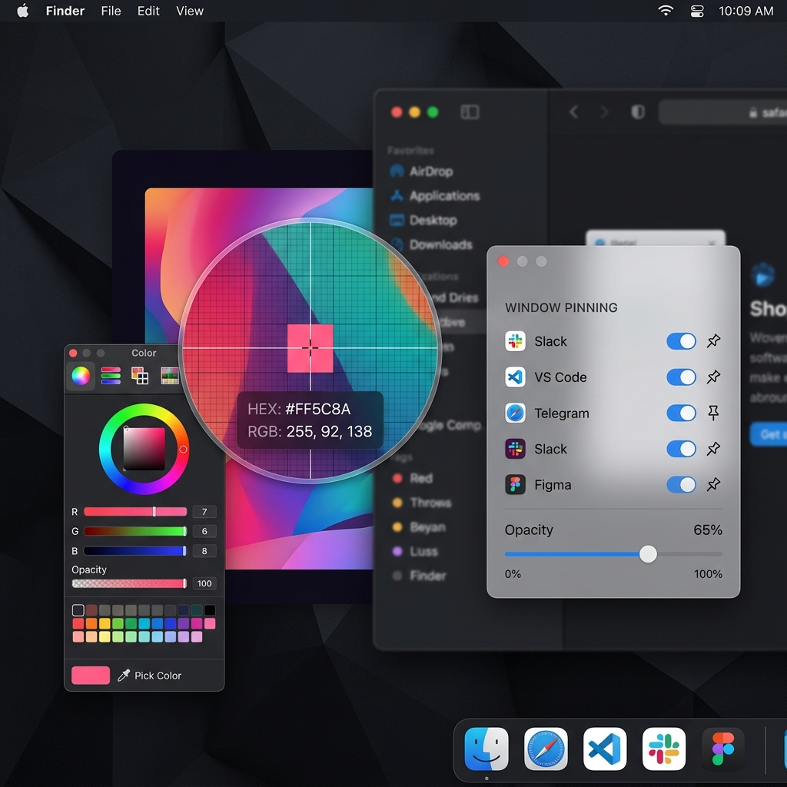

抛弃繁杂的第三方单功能插件，以统一、纯粹且强大的原生体验接管你的日常操作。
完美集成于系统右键菜单，一键新建 Markdown、Text 或 Office 常用文件，支持自定义模版。支持跨目录剪切粘贴、快捷拉起外部终端与 VS Code 编辑器、高速路径拷贝以及文件 MD5/SHA256 校验，告别繁复的拖拽与路径寻找。

智能识别悬停窗口，拖拽精准像素截取。内置丰富的标注编辑器，支持直线、箭头、高亮遮罩、模糊马赛克、智能步骤序号以及截图美化包装（圆角与柔和毛玻璃大阴影）。

多视窗屏幕悬浮固定，支持透明度调节、全局置顶与跨 Space 跟随。配合 16 倍高精度像素放大镜，一键获取 HEX、RGB、HSL 颜色代码，为设计师与开发者打造。

依托 macOS 最新底层技术，保证内存占用极低且响应迅速，绝无后台多余网络消耗。
完全由原生 Swift 语言编写，确保无任何臃肿框架，秒开体验。
采用 Apple 官方高性能屏幕捕获框架，提供超凡顺畅的截图体验。
基于系统底层 FinderSync 架构开发的右键增强，完美契合 Finder 操作环境。
底层的全局快捷键高精度拦截，热键响应不延迟，无冲突。
SnapClick 全面开源，支持在您自己的电脑上使用 Xcode 15 快速编译和私有化构建。